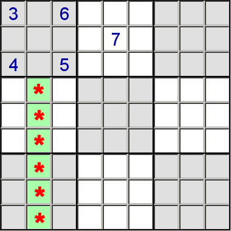

Sometimes, when you examine a block, you can determine that a certain number must be in a specific row or column, even though you cannot determine exactly which cell in that row or column. This is enough information to remove that number from the candidate list for other cells in the same row or column, but outside the block.
For example, in the partial puzzle below, the 7 in block one can only occur in column two. This means we can eliminate 7 from the candidates for the marked cells.
